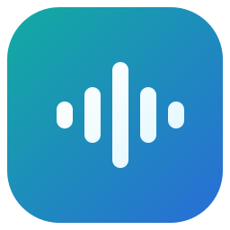

Внешний вид
Стекло — полупрозрачная матовая тема. Размытие рабочего стола зависит от ОС. Тема применяется и сохраняется сразу.
Автозапуск применяется в собранной версии.

VKSoundТолько музыка, которую друзья открыли для вас
Войдите в официальном окне VK.
Список музыки и плеер работают в VKSound.
Добавьте треки в список.
Изменения в VK проверяются после записи. Локальные списки — отдельно.
Стекло — полупрозрачная матовая тема. Размытие рабочего стола зависит от ОС. Тема применяется и сохраняется сразу.
Автозапуск применяется в собранной версии.
Сохранять прослушиваемый трек целиком в фоне. Используется дополнительный трафик. Сохраняйте только музыку, которую вправе копировать.
Новые подтверждённые добавления сохраняются по одному. Включено по умолчанию; существующая библиотека целиком не скачивается.
Кеш VK:
Импортированные файлы:
Очистка кеша VK их не удаляет.
Значок диска означает, что файл полностью сохранён. Новые копии — прямые MP3 до 100 МБ; HLS и защищённые потоки не кешируются. При заполнении кеша сохранение останавливается; старые копии не удаляются автоматически.
10 полос · настройки сохраняются автоматически
Изменение полосы или выбор пресета включает эквалайзер. При усилении добавляется запас по уровню; общая громкость может стать ниже.
Усиление автоматически ограничивается для снижения перегрузки. Исходный файл не меняется.
Работают и вне окна VKSound, пока приложение запущено.
Нажмите сочетание в поле или введите его, например Ctrl+Alt+Space. Backspace очищает поле. Занятые сочетания не сохраняются.
Отдельное окно официального сайта VK — только для авторизации. После входа музыка играет в собственном плеере VKSound.
Добавление, удаление и порядок записываются в VK по вашей команде. Локальные плейлисты и кеш остаются на ПК.
Неофициальный клиент. Доступ к музыке определяется VK.